In this development report the design process of an integrated universal biquad filter is described. The development was done in a docker image for integrated circuit design, which is part of an open source kit. Subject of this development report is the design of an universal biquad filter, including the filter characterization and several steps of circuit design. Furthermore, the layout process is also part of this documentation. Additionally, the experiences with the open source development environment are shared as well. The filter was designed by the use of the IHP sg13g2 PDK. GitHub Repo
8 Introduction
Integrated circuits (ICs) have become indispensable in modern electronic systems owing to their compact form factor and reduced power consumption relative to discrete implementations, like PCBs. In this work, we present the design and realization of a biquad filter employing open-source tools, like Xschem. The following documentation details the methodologies and development steps undertaken throughout the filter’s implementation.
This project is part of the Electronics Engineering (M. Sc.) course “Analogue and Mixed-Signal Circuit Design” at Hochschule Bremen City University of Applied Sciences (HSB).
The Filter consists of four filter-types: Band-Pass, Low-Pass, High-Pass, and Band-Stop. Each realized with OpAmps (Operational Amplifiers).
In this project, a fully integrated second-order biquad filter is designed, whose key specifications are a center frequency of \(f_0 = 1~\text{kHz}\), a quality factor of \(Q = 10\), and a DC pass-band gain of \(H_0 = 1\). These parameters ensure a narrowband response around \(1~\text{kHz}\) with a peak gain of unity at low frequencies and sharp roll-off in the stop-bands.
Since we as student development team had a course regarding the same filter-circuit in our Bachelors, creating a PCB-Design, several differences appear when designing an integrated circuit instead of a PCB-Layout:
In a PCB design, each resistor, capacitor or operational amplifier is an individual component whose behavior are determined by packaging and board-level routing. Traces can be routed over multiple layers and adjusted or re-routed quickly to correct errors, and heat dissipation is managed by copper pours, thermal vias and component placement. Manufacturing can be done faster, easier and cheaper, sometimes even in-house with the right tools.
An IC implementation must realize all passive and active elements in silicon, with component values depend on device geometry and process parameters rather than off-the-shelf parts. Layout constraints are far tighter, interconnect parasitics, device matching and substrate coupling must be considered. Thermal dissipation spreads through the silicon substrate. Because tape-outs require weeks or months, first-pass correctness is essential, and extensive device modeling, parasitic extraction and layout automation are required to achieve the target filter response on chip.
The basic specifications are listed below in Table 8.1:
Table 8.1: Design Specification for Biquad Filter
Parameter
Value
Design frequency
\(f_0 = 1~\text{kHz}\)
Quality factor
\(Q = 10\)
DC pass-band gain
\(H_0 = 1\)
Technology
IHP Open Source PDK 130nm BiCMOS SG13G2
Note: This documentation details our development process during our Master’s Course, but does not include an actual tape-out or fabricated silicon. We happily invite the open-source community to enhance our work by adding features, extend it, fix errors or even complete the full design process.
9 Creating the Development Environment
The basic environment is accessed within a docker container. Therefore, “Docker Desktop” should be installed. In addition, “Git” is needed to download the container to the own machine. Optional “Tortoise Git” can be used for easier, and more intuitive handling of Git. For Windows Machines, installing WSL is recommended.
To create the Docker container, a Git repository needs to be cloned. For this purpose a dedicated folder (named: eda) needs to be created. Inside this dedicated folder the repository “IIC-OSIC-TOOLS” with the main branch [1].
After cloning, the folder structure is extended with our subdivision for the different development stages to:
eda/
designs/
AMCD_Group2_IC_Design/
.magic
1_system
2_ideal_circ
3_real_circ
4_layout
5_report
analog-circuit-design/
…
IHP-Open-PDK/
…
.designinit
The full process for setting up the design environment is described at the Git-repository IIC-OSIC-TOOLS.
10 Circuit Schematic
After the configuration of our work machines we want to create our filter design with an existing Circuit-Schematic from “Analog System Lab Kit Pro Manual”.
The used Circuit is based on ALSK Pro Experiment 4. This active filter uses 4 OP-Amps [2]:
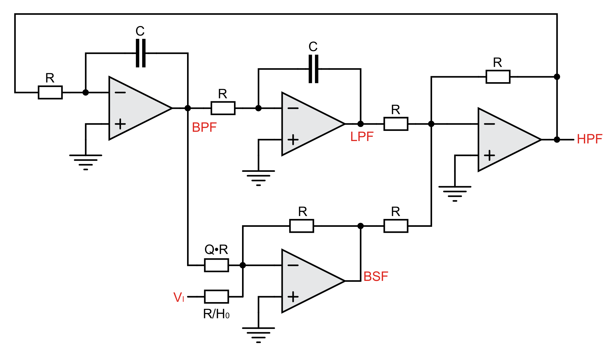
Figure 10.1: ASLK Pro Circuit Schematic
Figure 10.1 shows a reference potential at the output of each of the following filters, with following meanings:
BPF: Band-Pass Filter
LPF: Low-Pass Filter
HPF: High-Pass Filter
BSF: Band-Stop Filter
Additionally, a fixed resistance \(R\) and capacitor \(C\) is used for most parts. An exception can be seen at the negative input of the BSF-OP-Amp: First there is a resistor labeled with \(Q \cdot R\), as well as a resistor labeled \(R / H_0\) below. For these resistors the resistance must be the value given by the mathematical relation given by each label and the fixed \(R\) used in the other resistors: \(Q \cdot R\) is used the set the quality factor \(Q\), and \(H_0\) is used as the low frequency gain of the transfer functions. The quality factor \(Q\) controls the damping and thus the filter’s bandwidth. A higher \(Q\) yields a narrower passband with a sharper peak at the resonance frequency, while a lower \(Q\) produces a broader, more heavily damped response. The parameter \(H_0\) establishes the DC gain, scaling the low-frequency amplitude and thereby setting the overall output level of all four filter responses.
import numpy as npimport matplotlib.pyplot as plt# converterdef mag2db(H):return20*np.log10(np.abs(H))# Low-Pass transfer functiondef HLP(s, w0=2*np.pi*1000, Q=10, H0=1):return H0 / (1+ s/(w0*Q) + (s/w0)**2)# Specsf0 =1000# Hzw0 =2*np.pi*f0 # rad/sfreqs = np.linspace(1, 100*f0, 10000) # 1 Hz to 100 kHzs =1j*2*np.pi*freqsQs = [0.5, 0.7071, 1, 2, 5, 10]H0_vals = [0.5, 1, 2]# Figure 1: LPF for different Qs (H0 = 1)plt.figure(figsize=(6,6))for Q in Qs: H = HLP(s, w0, Q, H0=1) style ='-'if Q==10else'--' plt.semilogx(freqs, mag2db(H), style, label=f'$Q$={Q}')plt.title('LPF Frequency Response for various $Q$ ($H_0$ = 1)')plt.xlabel('Frequency / Hz')plt.ylabel('|H| / dB')plt.grid(True)plt.xlim(50, 4000)plt.ylim(-20, 28)#plt.legend(loc='lower center', ncol=len(Qs), bbox_to_anchor=(0.5, -0.2))plt.legend()plt.tight_layout()# Figure 2: LPF for different H_0 (Q = 10)plt.figure(figsize=(6,6))for H0 in H0_vals: H = HLP(s, w0, 10, H0) plt.semilogx(freqs, mag2db(H), '-', label=f'$H_0$={H0}')plt.title('LPF Frequency Response for various $H_0$ (Q = 10)')plt.xlabel('Frequency / Hz')plt.ylabel('|H| / dB')plt.grid(True)plt.xlim(50, 4000)plt.ylim(-20, 28)#plt.legend(loc='lower center', ncol=len(H0_vals), bbox_to_anchor=(0.5, -0.2))plt.legend()plt.tight_layout()# plt.show()
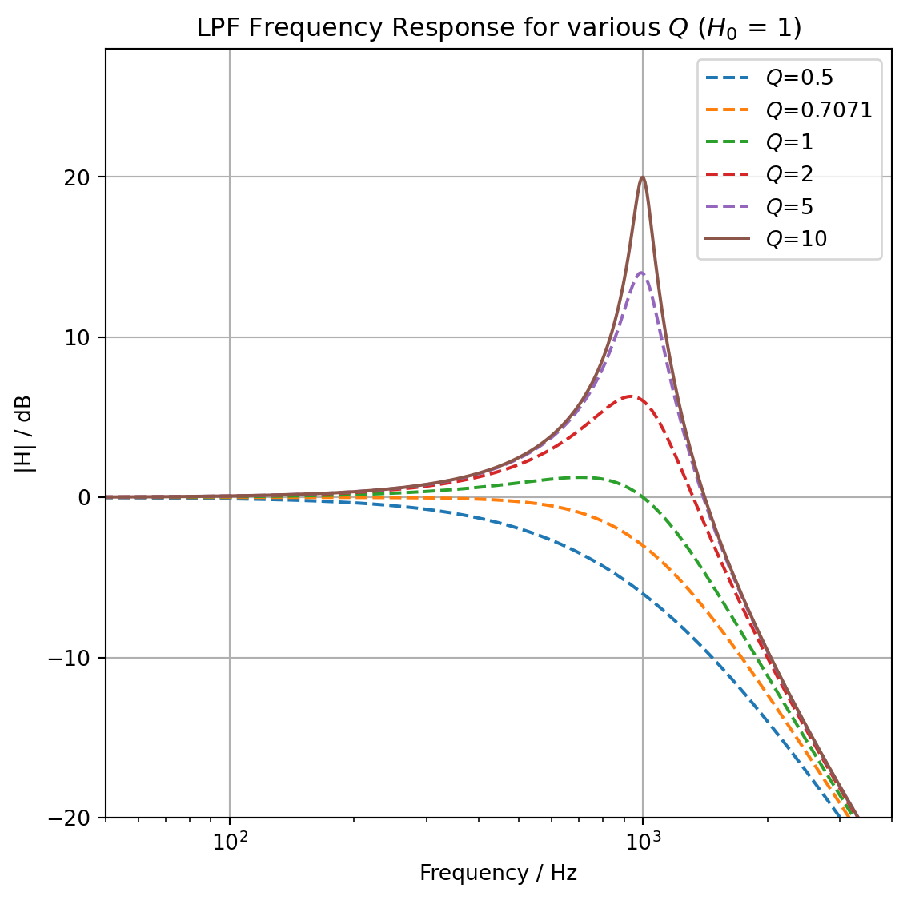
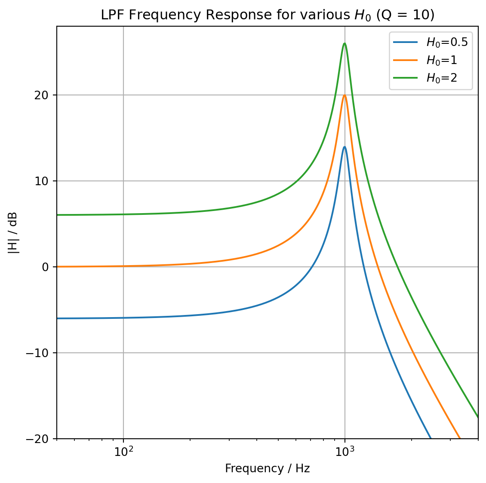
This behavior can be seen by both of the previously created plots:
The first figure shows the low-pass response for several different \(Q\) factors. As \(Q\) increases, a pronounced peak appears at the cutoff frequency \(f_0\) and the filter’s transition from pass-band to stop-band becomes much sharper, resulting in a very narrow region around the cutoff where signals are passed. Conversely, lower \(Q\) values produce a flatter, more gently sloping response with a wider transition region and little or no resonance peak. For the other filter types, the role of \(Q\) is similar but manifests differently:
High-Pass: A higher \(Q\) produces a small resonance bump just above the cutoff and a steeper roll-off into the stop-band, while a lower \(Q\) makes the transition more gradual and without any peaking.
Band-Pass: \(Q\) governs the width of the passed band around the center frequency. A high \(Q\) gives a very narrow pass-band with sharp skirts, whereas a low \(Q\) yields a much broader pass-band and a flatter response.
Band-Stop: \(Q\) sets the width of the notch. With high \(Q\), the filter rejects only a narrow slice of frequencies around the center, while with low \(Q\) it suppresses a wider range, creating a gentler attenuation curve.
In each case, \(Q\) determines how sharply the filter transitions around its critical frequencies (i.e. the \(-3~\text{dB}\) cutoff points), defining whether the filter is highly selective or more broadly tuned.
Below, in the second Figure illustrates how varying the DC pass-band gain \(H_0\) simply shifts the entire magnitude response up or down without changing its center frequency or bandwidth. \(H_0\) sets the absolute gain level in the pass-band. Higher, \(H_0\) increases overall amplitude, lower \(H_0\) attenuates it, while leaving the filter’s shape determined by \(f_0\) and \(Q\) intact.
10.1 Operational Amplifier
The circuit of the biquad filter in Figure 10.1 consists of 4 OpAmps, with two integrators (BPF, LPF) and two adders (HPF, BSF). Since these aren’t finished parts for the circuit (unlike at PCB-Design), the OpAmps need to be as well. For this purpose OTA (operational-transconductance amplifier) are used. These can bee seen in following Figure [3]:
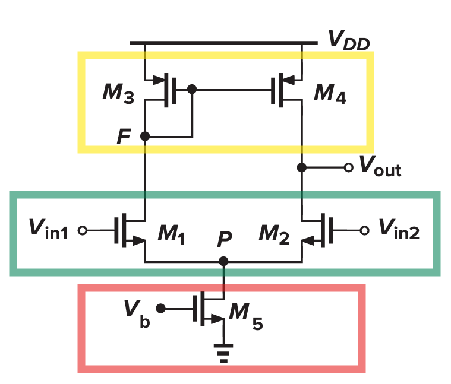
Figure 10.2: Internal Stages of 5T-OTA
Three Stages are inside the OTA:
Current Mirror (yellow)
Differential Amplifier (green)
Current Source (red)
The Current Mirror uses MOSFET Transistors to mirror one branch of the differential pair into the other, producing a single-ended output voltage at \(V_{out}\).
At the Differential Amplifier the small input voltage difference is converted into currents.
Lastly the Current Source supplies a constant bias current to set the transconductance.
10.2 Transfer Functions
Each of the filters can be expressed by their transfer function for further analysis. In the following transfer functions:
\(s\) is the complex Laplace variable
\(V_i\) is the input voltage
\(V_n\) is the output voltage at the n-th port (corresponding to HPF, BPF, LPF, BSF)
\(\omega_0 = \tfrac{1}{RC}\) is the filter’s center frequency
To model the ideal behavior of each filter we can use the following transfer functions [2]:
This leads to following numerator coefficients \(b\):
Filter
\(b_2\)
\(b_1\)
\(b_0\)
HPF
\(H_0 / \omega_0^2\)
0
0
BPF
0
\(-H_0 / \omega_0\)
0
LPF
0
0
\(H_0\)
BSF
\(H_0 / \omega_0^2\)
0
\(H_0\)
11 Filter Design
Based on specification from Table 8.1 and \(\omega = 2 \pi \cdot f_0\) needs to be used, therefore not needing to specify part specifications for resistors and capacitors. This will be done in Chapter 12.
11.1 Bode Plot
To validate the four filter types with selected values, a Bode Plot is created by showing magnitude and phase in over a bandwidth with \(0 \leq f \leq 3~\text{kHz}\):
At \(f_0\) the gain of \(Q=10\) (equals \(20~\text{dB}\)) can be seen for LPF, BPF, HPF, and a notch for BSF. This demonstrates the desired behavior of the biquad Filter.
The phase shift at \(f_0\) of BSF and LP are the smallest (ca. \(-25°\)), with BPF being at around \(-110°\), and HP the highest phase shift with \(155°\).
11.2 Pole–Zero Analysis
By analyzing the poles and zeroes of each, the filters can be confirmed, if locations of poles and zeroes match each Filter-type.
import numpy as npimport matplotlib.pyplot as pltfrom scipy.signal import freqs# Given valuesf0 =1000# Center frequency (Hz)Q =10# Quality factorH0 =1# DC gain# Calculate omega_0w0 =2*np.pi*f0# Denominator coefficients (a2*s^2 + a1*s + a0)a2 =1/ w0**2a1 =1/ (w0 * Q)a0 =1den = [a2, a1, a0]# Numerator coefficients for each filternum_LP = [H0] # H0num_HP = [H0 / w0**2, 0, 0] # H0*(s/omega_0)^2num_BP = [-H0 / w0, 0] # -H0*(s/omega_0)num_BS = [H0 / w0**2, 0, H0] # H0*(1 + (s/omega_0)^2)# Function to compute zeros and polesdef compute_pz(num, den): zeros = np.roots(num) poles = np.roots(den)return zeros, poles# Compute zeros and poles for each filterz_LP, p_LP = compute_pz(num_LP, den)z_HP, p_HP = compute_pz(num_HP, den)z_BP, p_BP = compute_pz(num_BP, den)z_BS, p_BS = compute_pz(num_BS, den)# --- Figure 1: 2x2 Pole-Zero plots ---fig1, axes = plt.subplots(2, 2, figsize=(6, 6))filters = [ ('Lowpass', z_LP, p_LP), ('Highpass', z_HP, p_HP), ('Bandpass', z_BP, p_BP), ('Bandstop', z_BS, p_BS),]for ax, (title, zeros, poles) inzip(axes.flat, filters): ax.scatter(np.real(zeros), np.imag(zeros), marker='o', facecolors='none', edgecolors='b', label='Zeros') ax.scatter(np.real(poles), np.imag(poles), marker='x', color='r', label='Poles') ax.set_title(f'{title} Filter') ax.set_xlabel('Real') ax.set_ylabel('Imag') ax.grid()# ax.legend() ax.axis('equal')# ax.legend() # Legend is too big inside subplothandles, labels = axes[0,0].get_legend_handles_labels()fig1.legend(handles, labels, loc='lower center', ncol=2, bbox_to_anchor=(0.5, -0.03))fig1.suptitle('Pole-Zero Maps', y=1.02)plt.tight_layout()# --- Figure 2: 2x2 Frequency Response plots ---# Frequency axis for Bode plotf = np.logspace(1, 5, 5000) # 10 Hz to 100 kHzw =2* np.pi * f # rad/s# Compute frequency responses_, H_LP = freqs(num_LP, den, w)_, H_HP = freqs(num_HP, den, w)_, H_BP = freqs(num_BP, den, w)_, H_BS = freqs(num_BS, den, w)# Convert to dBdb_LP =20* np.log10(abs(H_LP))db_HP =20* np.log10(abs(H_HP))db_BP =20* np.log10(abs(H_BP))db_BS =20* np.log10(abs(H_BS))# Plot 2x2 subplots for magnitudefig2, axes2 = plt.subplots(2, 2, figsize=(6, 6))axes2[0,0].semilogx(f, db_LP, 'b', linewidth=1.5, color="blue")axes2[0,0].set_title('Lowpass Filter')axes2[0,0].set_xlabel('Frequency / Hz')axes2[0,0].set_ylabel('|H| / dB')axes2[0,0].grid()axes2[0,1].semilogx(f, db_HP, 'r', linewidth=1.5, color="orange")axes2[0,1].set_title('Highpass Filter')axes2[0,1].set_xlabel('Frequency / Hz')axes2[0,1].set_ylabel('|H| / dB')axes2[0,1].grid()axes2[1,0].semilogx(f, db_BP, 'm', linewidth=1.5, color="green")axes2[1,0].set_title('Bandpass Filter')axes2[1,0].set_xlabel('Frequency / Hz')axes2[1,0].set_ylabel('|H| / dB')axes2[1,0].grid()axes2[1,1].semilogx(f, db_BS, 'g', linewidth=1.5, color="red")axes2[1,1].set_title('Bandstop Filter')axes2[1,1].set_xlabel('Frequency / Hz')axes2[1,1].set_ylabel('|H| / dB')axes2[1,1].grid()fig2.suptitle('Frequency Responses', y=1.02)plt.tight_layout()# plt.show()
/var/folders/bs/dl5x4l2n6xv6ywrg8knjtw440000gn/T/ipykernel_5009/811226949.py:86: UserWarning: color is redundantly defined by the 'color' keyword argument and the fmt string "b" (-> color=(0.0, 0.0, 1.0, 1)). The keyword argument will take precedence.
axes2[0,0].semilogx(f, db_LP, 'b', linewidth=1.5, color="blue")
/var/folders/bs/dl5x4l2n6xv6ywrg8knjtw440000gn/T/ipykernel_5009/811226949.py:92: UserWarning: color is redundantly defined by the 'color' keyword argument and the fmt string "r" (-> color=(1.0, 0.0, 0.0, 1)). The keyword argument will take precedence.
axes2[0,1].semilogx(f, db_HP, 'r', linewidth=1.5, color="orange")
/var/folders/bs/dl5x4l2n6xv6ywrg8knjtw440000gn/T/ipykernel_5009/811226949.py:98: UserWarning: color is redundantly defined by the 'color' keyword argument and the fmt string "m" (-> color=(0.75, 0.0, 0.75, 1)). The keyword argument will take precedence.
axes2[1,0].semilogx(f, db_BP, 'm', linewidth=1.5, color="green")
/var/folders/bs/dl5x4l2n6xv6ywrg8knjtw440000gn/T/ipykernel_5009/811226949.py:104: UserWarning: color is redundantly defined by the 'color' keyword argument and the fmt string "g" (-> color=(0.0, 0.5, 0.0, 1)). The keyword argument will take precedence.
axes2[1,1].semilogx(f, db_BS, 'g', linewidth=1.5, color="red")
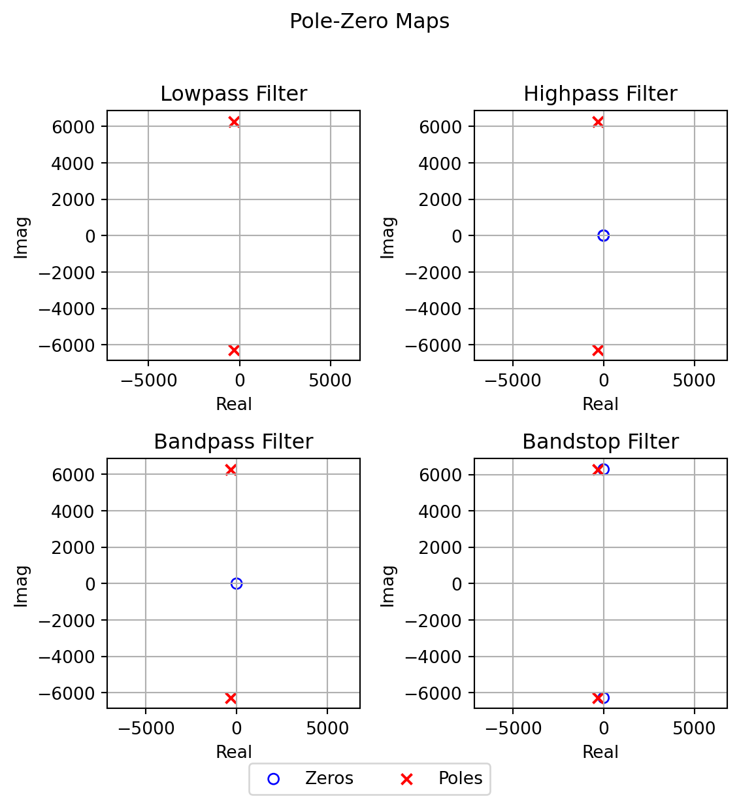
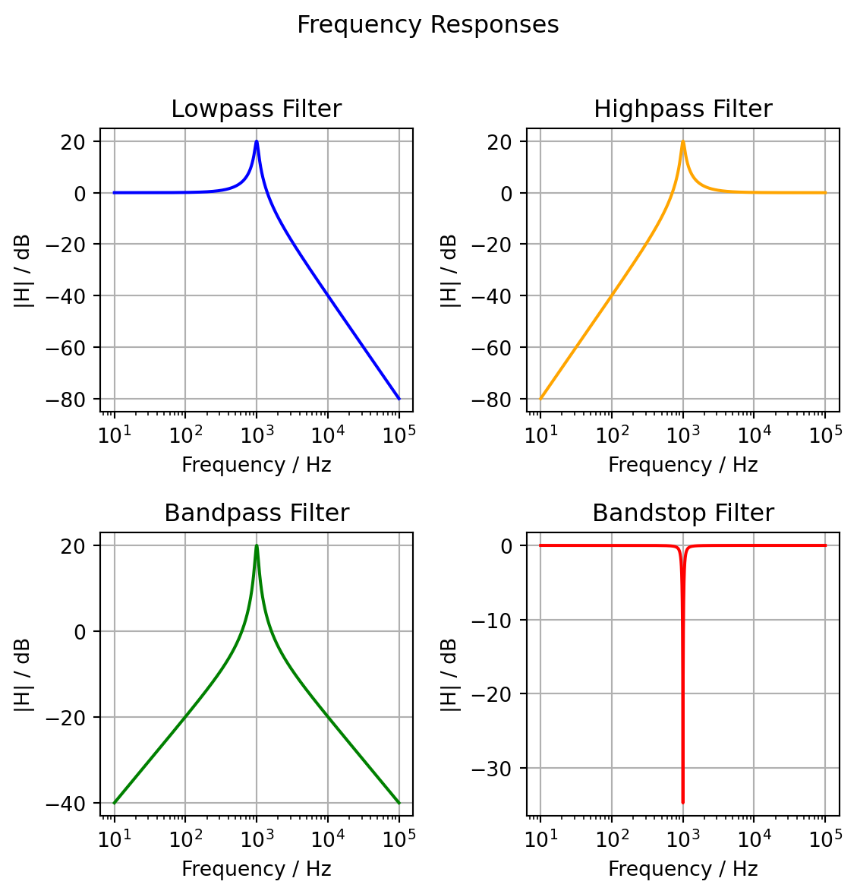
The script uses freqs() of the SciPy toolbox to convert numerator and denominator coefficient vectors into frequency responses, confirming further the Filter by analyzing poles and zeroes.
No finite zeros for the Low-Pass, a double zero at \(s=0\) for the High-Pass, a single zero at the origin for the Band-Pass, and conjugate zeros at the left half for the band-stop.
This shows similar locations, comparing poles/zeroes to typical second order filters [4]. Also creating plots based on the numerator and denumerator creates similar magnitude responses (Second Figure) similar to Section 11.1.
11.3 Impulse / Step Response
In this section time-domain simulations are created. Namely, impulse and step responses of each second-order filter are plotted so it can be observed how they react to sudden inputs.
Running the four transfer-function models through SciPy’s LTI routines produces following two Figures with 2x2 subplots:
/opt/local/Library/Frameworks/Python.framework/Versions/3.13/lib/python3.13/site-packages/scipy/signal/_ltisys.py:603: BadCoefficients: Badly conditioned filter coefficients (numerator): the results may be meaningless
self.num, self.den = normalize(*system)
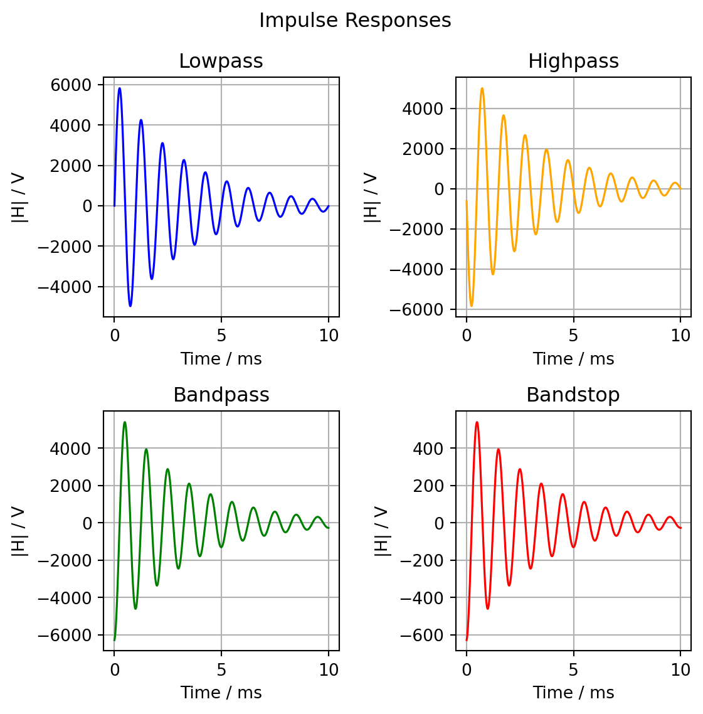
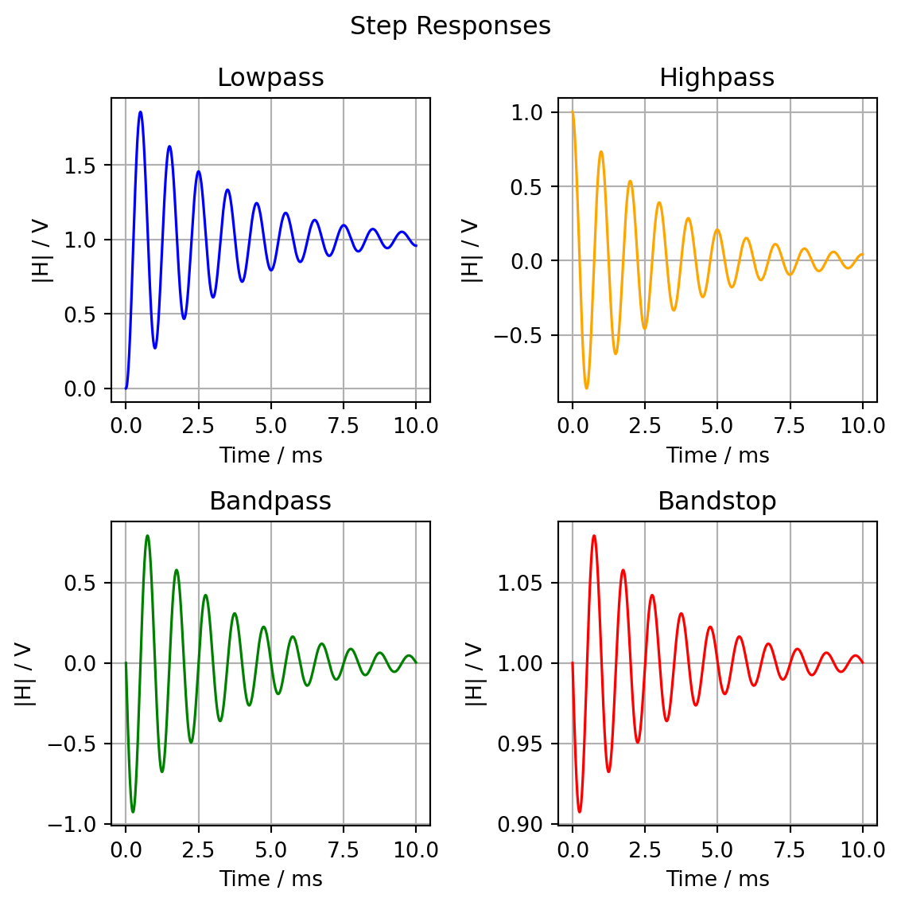
At the impulse plots, it can be seen how each filter reacts after a tiny, instant pulse (Dirac impulse). The four filters show an increased amplitude at the beginning, with each filter decaying over time, and therefore showing how sharply the filters resonate and how quickly their oscillations flattens out.
The step plots show how each filter behaves when you suddenly apply a steady voltage (Sudden step of amplitude from \(A=0~\text{V}\) to \(A=1~\text{V}\)). The low-pass filter rises and flattens at \(A=1~\text{V}\) to its final level. The high-pass filter jumps at first, then falls back to zero, showing it blocks DC. The band-pass filter oscillates, and then decays down back toward zero. The band-stop starts at \(A=11~\text{V}\) with decaying oscillation around \(1~\text{V}\).
A higher \(Q\) gives a longer and more noticeably ringing, but the ringing eventually fades away.
Impulse- and step response with various Q
Here are lower \(Q\) plotted, showing lower magnitude and faster decaying after impulse and step response, with \(Q=[2, 1, 0.7071]\).
Note
The ´:::´ displayed between this note and the plots is a bug occurring when using python-code inside a collapsable text block. Please ignore it.
import numpy as npimport matplotlib.pyplot as pltfrom scipy.signal import TransferFunction, impulse, step# Filter specsf0 =1000# HzH0 =1Q_list = [2, 1, 0.7071]# Time vector for simulationt = np.linspace(0, 0.005, 10000) # 0 to 5 ms# Set up storage for responsesimp_responses = {'Lowpass': [], 'Highpass': [], 'Bandpass': [], 'Bandstop': []}step_responses = {'Lowpass': [], 'Highpass': [], 'Bandpass': [], 'Bandstop': []}# Compute for each Qfor Q in Q_list: w0 =2* np.pi * f0 a2 =1/ w0**2 a1 =1/ (w0 * Q) a0 =1 den = [a2, a1, a0] num_LP = [0, 0, H0] num_HP = [H0 / w0**2, 0, 0] num_BP = [0, -H0 / w0, 0] num_BS = [H0 / w0**2, 0, H0] systems = {'Lowpass': TransferFunction(num_LP, den),'Highpass': TransferFunction(num_HP, den),'Bandpass': TransferFunction(num_BP, den),'Bandstop': TransferFunction(num_BS, den) }for name, sys in systems.items(): _, y_imp = impulse(sys, T=t) _, y_step = step(sys, T=t) imp_responses[name].append((Q, y_imp)) step_responses[name].append((Q, y_step))# Colors for Qscolor_map = {10: 'blue',2: 'orange',1: 'green',0.7071: 'red'}# Plot Impulse Responsesfig1, axs1 = plt.subplots(2, 2, figsize=(6, 6))fig1.suptitle('Impulse Responses')for ax, filter_name inzip(axs1.flat, ['Lowpass', 'Highpass', 'Bandpass', 'Bandstop']):for Q, y in imp_responses[filter_name]: ax.plot(t *1e3, y, linestyle='--', linewidth=1.2, label=f'Q = {Q}', color=color_map[Q]) ax.set_title(filter_name) ax.set_xlabel('Time / ms') ax.set_ylabel('|H| / V') ax.grid() ax.legend(fontsize='small')fig1.tight_layout()# Plot Step Responsesfig2, axs2 = plt.subplots(2, 2, figsize=(6, 6))fig2.suptitle('Step Responses')for ax, filter_name inzip(axs2.flat, ['Lowpass', 'Highpass', 'Bandpass', 'Bandstop']):for Q, y in step_responses[filter_name]: ax.plot(t *1e3, y, linestyle='--', linewidth=1.2, label=f'Q = {Q}', color=color_map[Q]) ax.set_title(filter_name) ax.set_xlabel('Time / ms') ax.set_ylabel('|H| / V') ax.grid() ax.legend(fontsize='small')fig2.tight_layout()
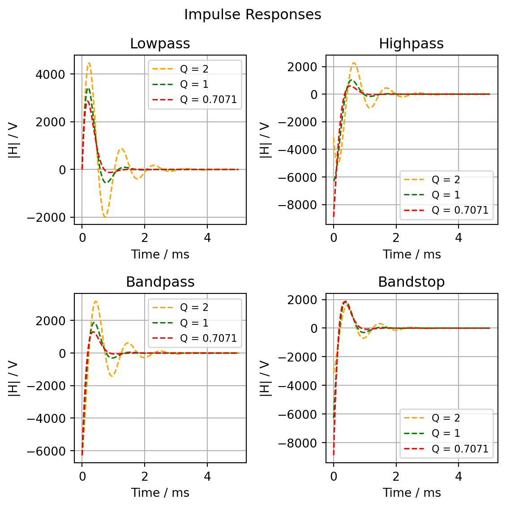
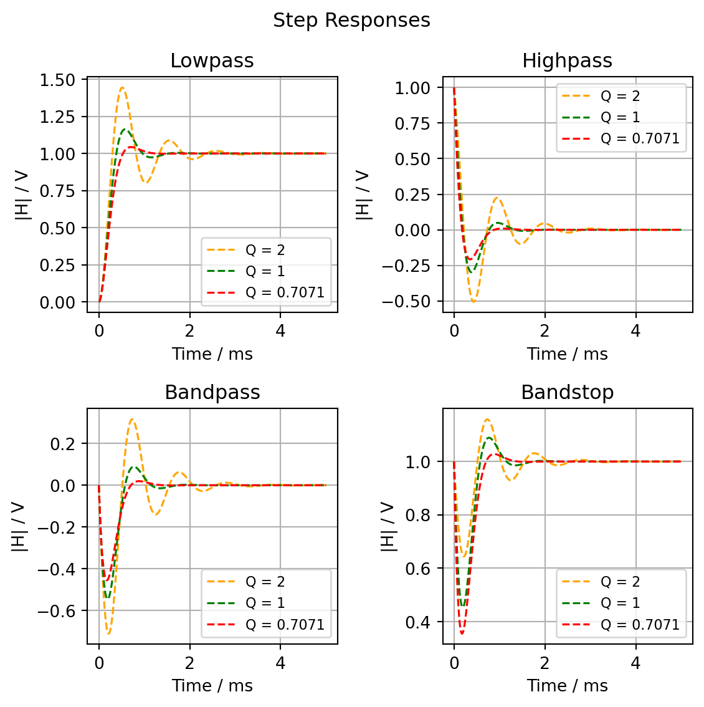
12 Circuit Design
To implement the desired behavior of the biquad circuit described in the previous chapter Chapter 11 into an integrated circuit design, an ideal biquad (Figure 12.1) is first created in Section 12.1. This serves to validate the expected behavior. Once this validation is successful, the ideal operational amplifiers (op-amps) can be replaced with real op-amps or Operational-Transconductance-Amplifiers (OTAs). In our case, the ideal op-amps were initially replaced with the “improved OTAs” (Figure 12.3) developed by Prof. Pretl [1]. However, since these did not reproduce the desired behavior after several attempts (Chapter 14), a new biquad structure based on Baker [5] in Section 12.2 was developed. Again, an ideal circuit using ideal OTAs was first implemented (Figure 12.7). After successfully validating the desired behavior, the ideal OTAs were replaced with a real transistor-level circuit (Figure 12.10). This biquad was then further adjusted to qualitatively achieve the desired behavior.
Due to the complexity of implementing a biquad in the integrated circuit design, the parameters of the circuits provided were rather tested in the simulation process and attempts were made to adapt them so that our requirements could be met. The correct approach would be to mathematically determine the various parameters based on the desired characterization of the filter and then adjust them with small changes towards the end. This includes, for example, the pre-calculation of capacitor sizes as well as the determination of the individual gains of the OTAs and the corresponding design of the W/L ratios of the transistors etc.. In addition, we limit ourselves to the AC simulation in order to be able to better compare our filter behavior. To validate the system correctly, a transient and noise simulation would also have to be carried out.
12.1 ASLK Pro Experiment 4 Implementation
In the following sections the design following ASLK Pro Experiment 4 [2] is described.
12.1.1 Ideal Circuit Design (ASLK)
As an initial step in the development of the universal biquad filter, an ideal version of the circuit was implemented based on “ALSK Pro Experiment 4”, as described in [2]. The objective was to validate the theoretical filter behavior before moving on to a transistor-level implementation.
The circuit was built using Xschem and employs an ideal operational amplifier, provided as a .subckt SPICE model by Prof. Meiners. This model is named opamp1 and was integrated into the project directory under 2_ideal_cir. To include the model in Xschem, a .lib directive was used to reference the netlist, and care was taken to ensure the symbol pin configuration matched the subcircuit definition.
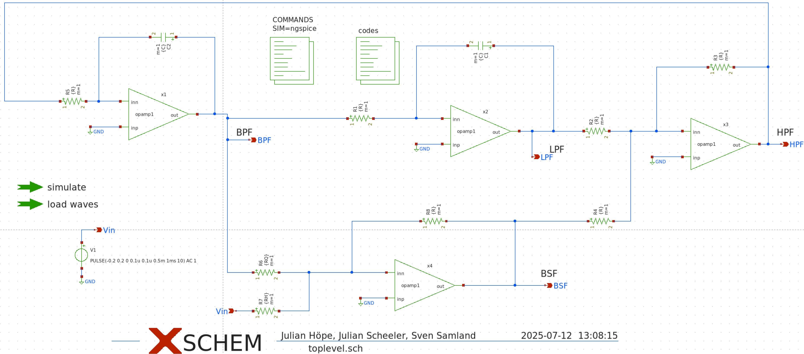
Figure 12.1: Ideal circuit of the ASLK biquad filter in Xschem (2_ideal_cir/toplevel.sch)
The topology of the circuit “toplevel.sch” includes all four standard biquad filter responses:
BPF: Band-Pass Filter
LPF: Low-Pass Filter
HPF: High-Pass Filter
BSF: Band-Stop Filter
Each stage is realized using a dedicated instance of the ideal op-amp. The resistor and capacitor values are defined in a SPICE-compatible .param statement in params.txt, which was loaded within the schematic environment. These parameters were derived from the characterization goals described in Table 8.1:
Center frequency: \(f_0 = 1~\mathrm{kHz}\)
Quality factor: \(Q=10\)
Gain: \(H_0=1\)
Choice of Capacitor
First, the capacitance is assumed with \(C = 100~\text{nF}\). This needs to be done, calculating the resistances in the next step:
import numpy as npf0 =1e3# HzC =100e-9# FR =1/(2*np.pi*f0*C)# outputprint(f"R = {R/1e3} kΩ")print(f"Rounded: R = {R/1e3:.2f} kΩ")
R = 1.5915494309189537 kΩ
Rounded: R = 1.59 kΩ
This yields:
\(R=1.59~\mathrm{k\Omega}\)
\(C=100~\mathrm{nF}\)
\(R_Q=10~\mathrm{k\Omega}~\) (to set \(Q\))
\(R_H=1~\mathrm{k\Omega}~\) (to set \(H_0\))
To simulate the frequency response, the schematic includes a simulation block with ngspice commands such as:
.controlac lin 1000 1 3kwrite toplevel.rawplot db(lpf) db(bpf) db(bsf) db(hpf).endc
This runs a frequency sweep (ac lin) and stores the output voltages at the HPF, BPF, LPF, and BSF nodes. The graphical configuration in Xschem is handled via embedded .graph directives, which are automatically visualized in the GUI. In this project, all results were visualized in Python with the corresponding raw data file.
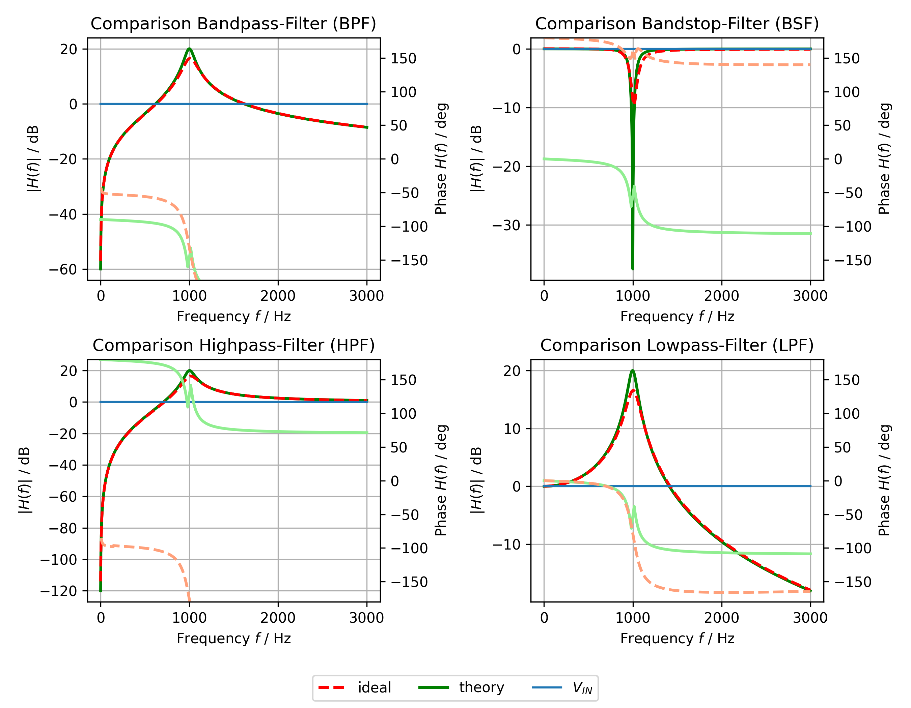
Figure 12.2: Results of the ideal ALSK biquad filter
The Figure 12.2 above shows the simulated behavior of the ideal biquad and the previously calculated theoretical curve. It can be seen that the ideal simulated biquad (red dashed line) corresponds well with the theory in the frequency responses of the four filter types. The peaks are somewhat weaker in the simulation than in theory. There are also differences in the phase response, for example the phase in the BSF, it’s shifted by \(180°\).
12.1.2 Real Circuit Design (ASLK)
As the ideal circuit has already been validated, it can now be implemented in the real circuit. To do this, the ideal OPAMPs were first replaced by the 5T-OTA from Pretl, but as their behavior was not convincing, we switched to the improved OTAs from Prof Pretl’s repository [1]. It’s shown in the Figure 12.3 below.
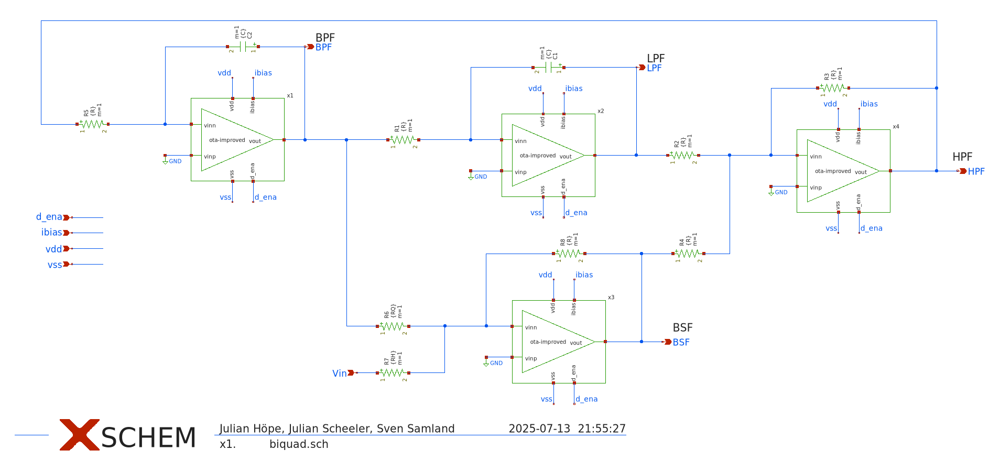
Figure 12.3: Real circuit of the ASLK biquad filter in Xschem (3_real_cir/biquad.sch)
Compared to the ideal circuit (Figure 12.1), it is noticeable that the OTAs now have the voltage inputs vdd, vss, d_ena and the current input ibias.
The following transistor circuit in Figure 12.4 is located in the respective improved OTAs. These transistors then had to be adapted accordingly to our desired filter behavior. The “sizing tool” for the improved OTA from Prof. Pretl’s Analog Circuit Design lecture material [6] was used for this. It quickly became apparent that the current becomes very high with high capacitive loads. The capacitance of the capacitors was therefore reduced from \(100~\mathrm{nF}\) to \(100~\mathrm{pF}\). In order to remain at a center frequency of \(f_0=1~\mathrm{kHz}\), the resistance value had to be increased accordingly from \(1.59~\mathrm{k\Omega}\) to \(1.59~\mathrm{M\Omega}\). The sizing carried out can be found in the project directory (3_real_cir/sizing/sizing_improved_ota.ipynb).
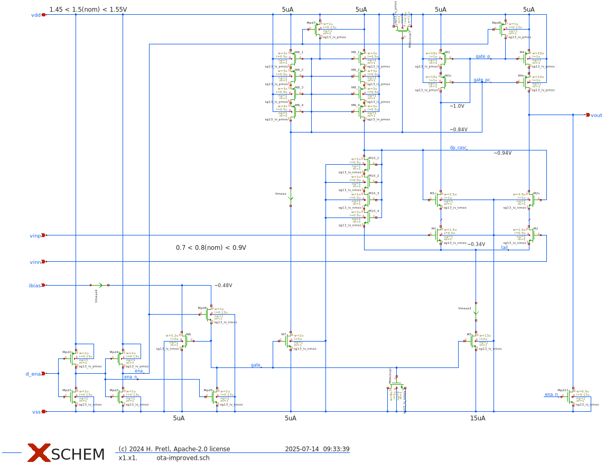
Figure 12.4: Improved OTA of Prof. Pretl in Xschem (3_real_cir/ota_improved.sch)
The individual transistors are IHP’s SG13G2 130nm CMOS Technology. A bias current of \(25~\micro\mathrm{A}\) was determined by sizing. In addition, the voltages \(vdd = 1.5~\mathrm{V}\), \(vss = 0~\mathrm{V}\) and \(ena = 1.5~\mathrm{V}\) are required.
To simplify the setting of the input variables, a test bench was also created for the entire circuit, which is seen in Figure 12.5.
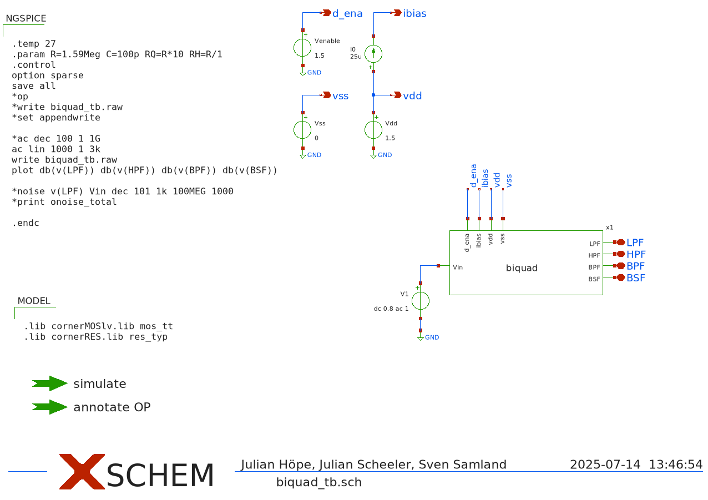
Figure 12.5: Testbench for the real circuit of the ASLK biquad filter in Xschem (3_real_cir/biquad_tb.sch)
This circuit was then tested with an AC simulation. The result (blue dashed line) can be seen in the Figure 12.6 below.
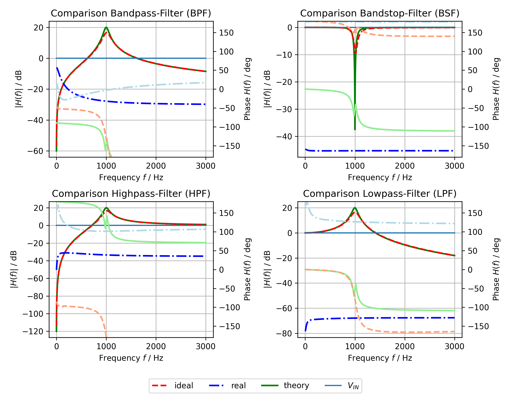
Figure 12.6: Results of the real ALSK biquad filter
It can be seen that the desired behavior could not be reproduced. One of the reasons for this is that this type of OTA cannot drive the required current.
12.2 Baker Implementation
As the desired behavior could not be reproduced, a new variant of a biquad was tried out. In this case, we cosntructed a biquad circuit according to Baker [5] in the following sections. The design process remains the same as the previous one.
12.2.1 Ideal Circuit Design (Baker)
Here, too, an ideal circuit, which is seen in Figure 12.7, was first constructed according to figure 3.53 in Baker’s bool [5, p. 115].
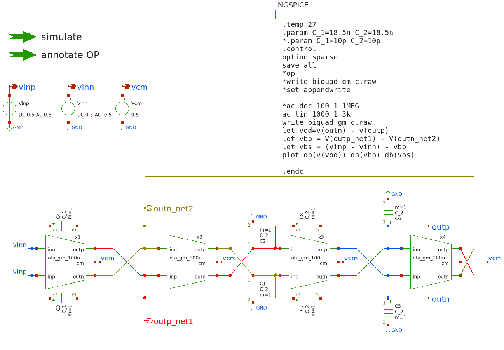
Figure 12.7: Ideal circuit of the Baker biquad filter in Xschem (2_ideal_cir/biquad_gm_c.sch)
The OTAs used have the ideal internal circuit shown in the following Figure 12.8, which was provided by Prof Meiners.
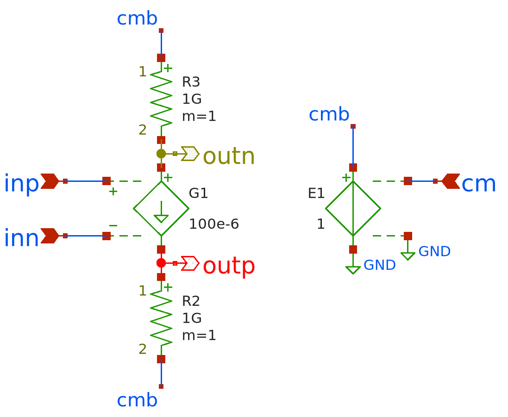
Figure 12.8: Ideal OTA provided by Prof. Meiners in Xschem (2_ideal_cir/ota_gm_100u.sch)
The Figure 12.9 below show that the desired behavior from the AC simulation could be qualitatively reproduced (red dashed line). Compared to the theoretical behavior (green line), the peaks are very weak, but for now it’s okay. This ideal circuit can therefore be transferred to the real circuit.
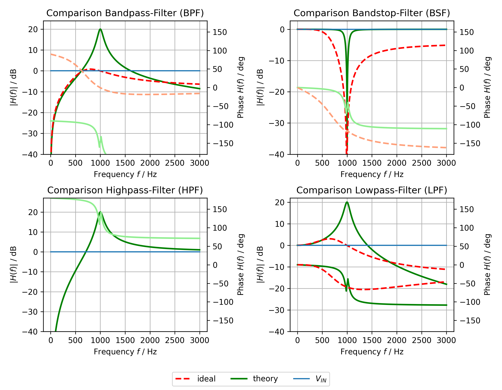
Figure 12.9: Results of the ideal Baker biquad filter
12.2.2 Real Circuit Design (Baker)
For the real circuit, this means that the ideal OTAs are first replaced with the real OTAs. This has been done in the Figure 12.10. It should be recognised that the real OTAs also have a voltage input for vdd and a current input for the bias current i_bias.
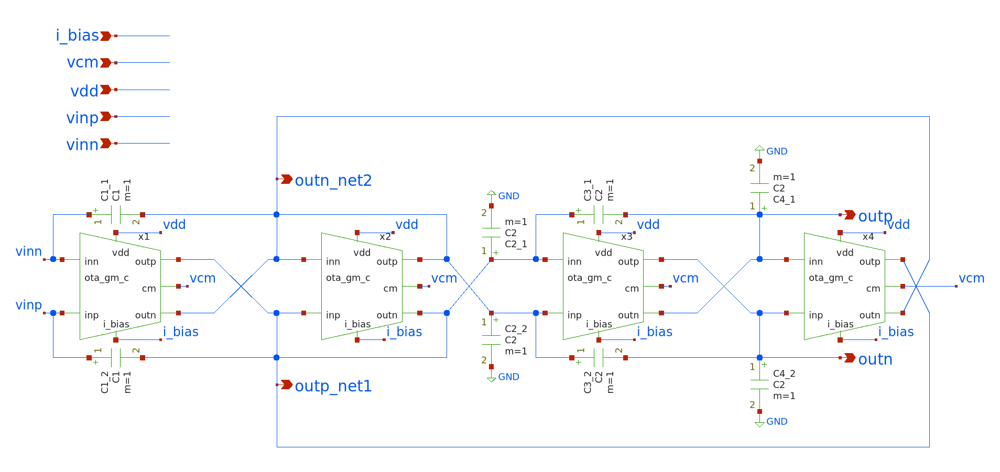
Figure 12.10: Real circuit of the Baker biquad filter in Xschem (3_real_cir/biquad_gm_c.sch)
It can be seen that these are differential OTAs. These require a positive (vinp) and a negative (vinn) input voltage. As well as a common-mode voltage (vcm). The output of the circuit results from \(\mathrm{vout} = \mathrm{outp} - \mathrm{outn}\).
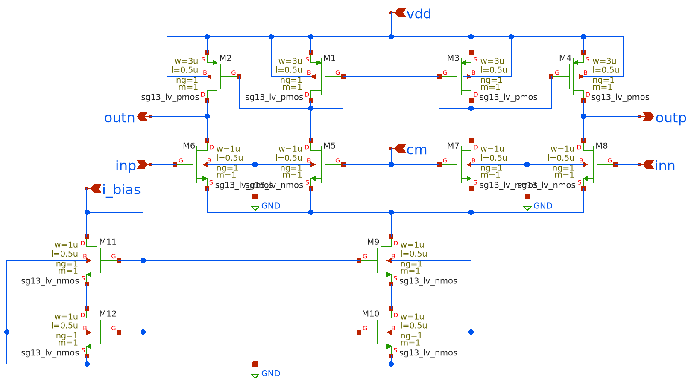
Figure 12.11: Real OTA of the Baker biquad filter in Xschem (3_real_cir/ota_gm_c.sch)
The transistors in the Figure 12.11 above have also been sized. These were determined according to the formulas of the individual gains from Baker’s document.
Here too, a test bench was created for better adjustment. The capacitor sizes were also specified in this. As mentioned at the beginning of this chapter, these values were determined by testing.
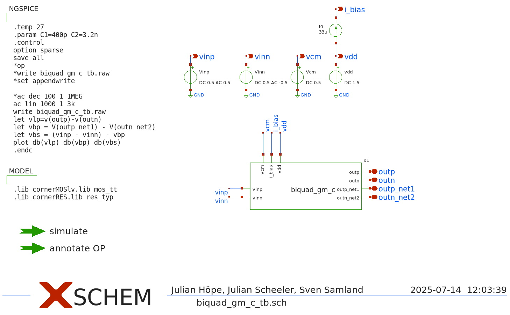
Figure 12.12: Testbench for the real circuit of the Baker biquad filter in Xschem (3_real_cir/biquad_gm_c_tb.sch)
The Figure 12.13 below shows the result of the AC simulation (blue dashed line). It can be seen that we have reached our design frequency around \(f_0 = 1~\mathrm{kHz}\). However, the amplification and attenuation are not as pronounced as in the ideal (red dashed line) or theoretical (green line) case.
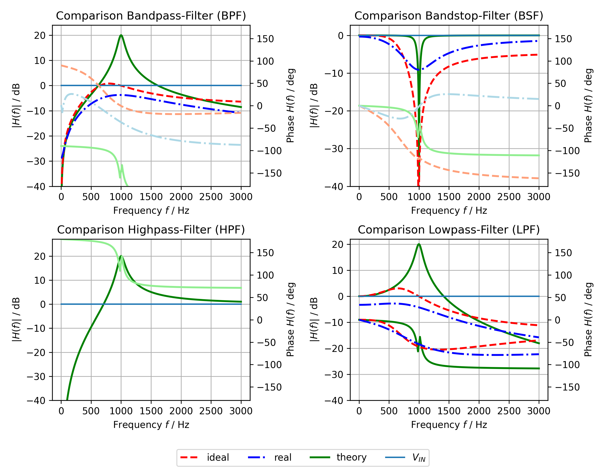
Figure 12.13: Results of the real Baker biquad filter
13 Layout
In Chapter 12 the circuit for the biquad filter is designed. As we have seen, there are some differences between the ideal circuit and the real circuit. After matching the filter response of both circuits, we need to layout the circuit. Since the step from ideal circuit to the real circuit took more time than expected due to the challenges described in Chapter 14, it was not feasible to do a layout of the described filter. Additionally, the real circuit did not work as expected with the OTA and the improved OTA from [1], a full layout will not be functional, since the OTAs are overloaded. From this outcome we decided to layout the 5T-OTA from [1] to follow the whole design process and gain some experience in the layout process as well.
The layout was done in KLayout with the use of the IHP sg13g2 PDK. In contrast to the layout from the bachelor course ANS, where the same biquad circuit was realized as a discrete PCB with casual TL082 OPAMPs, layouting integrated circuits is different to the PCB design.
13.1 Workflow in KLayout
In this section the layouting process using KLayout is described. In the first place the different layers will be described, afterward a connection to the discrete layouting process will be drawn. The schematic import from Chapter 12 is not directly possible. From this follows, every component need to be added to the layout manually. Later on, from the layout a netlist will be derived and compared to the netlist given by the schematic. This step is called Layout Versus Schematic (LVS).
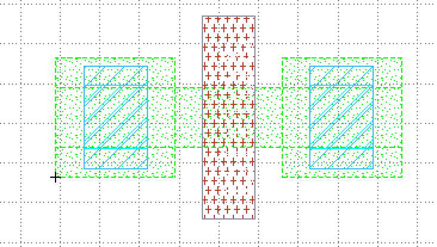
Figure 13.1: Drain, Source and Gate of pMOS in KLayout
In Figure 13.1 a part of a pMOS is shown. The drain and source contact of this pMOS are blue-colored areas, which represent the Metal1 layer. The drain and source nodes are connected through the green layer, which is the Active layer. The gate is red-colored and represents the GatPoly. All the contacts and the physical construction of the pMOS from Figure 13.1 are covered in NWell- and pSD-layers. This can be seen in Figure 13.2.
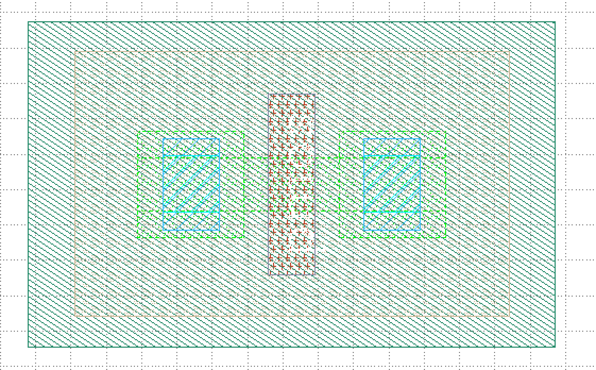
Figure 13.2: Complete pMOS in KLayout
When inserting a pMOS in the layout the pMOS will look like the pMOS shown in Figure 13.2. To connect the different ports of a pMOS, drawings on the respective layer need to be done. Connections on the same layer can be done directly by drawing a box, overlapping with the box of the pMOS contact. In Figure 13.3 the gates of two pMOS are illustrated.
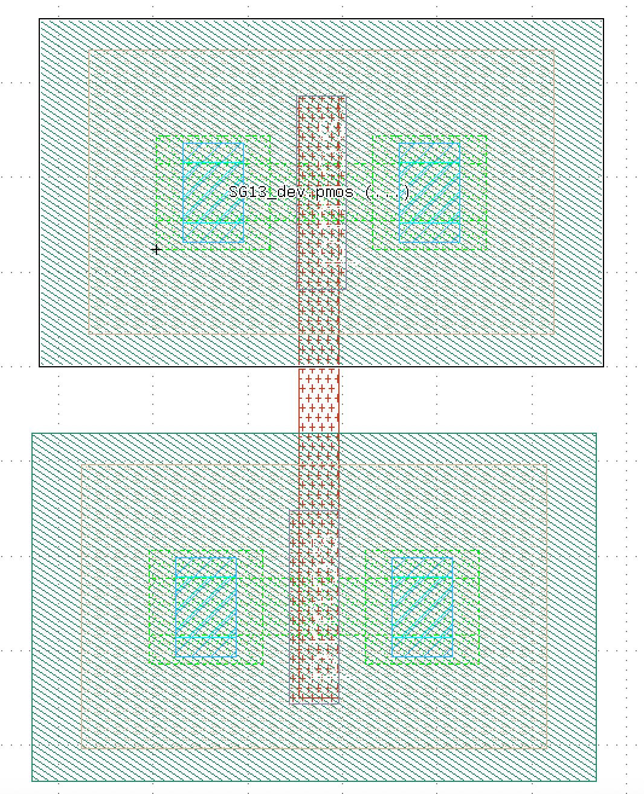
Figure 13.3: Connected gates of pMOS in KLayout
In order to connect two different layers, a via layer needs to be inserted to provide a vertical connection between them. To make pins accessible from the outside of the IC, a contact layer needs to be inserted. This can be observed in Figure 13.1, where the drain and source Metal1 pads are shadowed with a cyan pad, which represents the contact layer.
Another aspect which needs to be mentioned is the size of different components. According to the 5T-OTA from [1] the transistors have different \(\frac{g_m}{i_d}\) values and therefore different lengths \(L\) and widths \(W\). Unlike discrete components, where the housing is the same, e.g. a resistor can have different values with the same dimensions, the dimensions in discrete design vary. In discrete design the behavior is determined by the sizing and therefore the physical space this component will allocate controls the behavior.
In Figure 13.4 the layout of the 5T-OTA from [1] can be observed. It can be seen, that the components M3 and M4 are the largest components. This is caused by the higher \(\frac{g_m}{i_d}\) and the fact, that these are pMOS transistors. On the other hand, the biasing transistors M9 and M10 are very small compared to M3 and M4. The difference in the size is caused by the different purpose and behavior.
To ensure the layout is aligned with the schematic, the LVS needs to be performed. In this course the in Chapter 9 described tools were used. The LVS could not be performed as expected, the reason for this will be discussed in Chapter 14.
13.2 Differences to discrete layout process
The design processes for discrete and integrated circuit design differ in certain aspects, especially when it comes to layouting. However, there are also similarities. In the following comparison the differences and equalities are outlined.
In the discrete layout, performed in KiCad, the first step was to draw the schematic and wire it. Afterward the footprints for the components have been chosen. After drawing and assigning the footprints, the components needed to be placed on the PCB and the connections were routed. In the discrete case this means connecting the pins of each component according to the schematic. Selecting the footprints in the discrete case is in some kind comparable to choosing the PDK in the integrated case. After choosing the PDK, the base components, e.g. pMOS and nMOS, are available. Following this step the base components will be placed in the drawing space. Since in integrated circuit design the components are more fundamental and the operation points and the behavior is defined by the geometry, for each component the geometry is specified with the derived values from the sizing in Chapter 12. Another difference can be found when connecting the components. As described previously, in case of discrete design these connections were just wire-like connections between the pins (soldering pads). For the integrated layout every port of a component is on a different layer, which follows in connecting these different layers through e.g. vias.
For the discrete and integrated circuit design it is necessary to do a design rule check (DRC). The design rule check is in some manner the same. In case of the integrated design the DRC is more detailed, since the layouting process is more complex due to the drawing of the different layers and geometries. Furthermore, the design rules are determined by the chosen PDK, while for the discrete design the design rules are specified by the manufacturer.
14 Challenges
In the whole design process of an integrated biquad filter some challenges were present. In this chapter the most important challenges and their influence on the filter design will be described.
14.1 Circuit Design
The design process followed the meet-in-the-middle design style, with mostly the top-down style [7]. When it came to the design of the 5T-OTA from [1] was supposed to be the used device in the biquad design. Following this approach, from the real circuit of the 5T-OTA a ideal version like in Figure 12.8 was implemented. With the ideal description of the desired OTA the values for \(R\) and \(C\) (see Figure 10.1) were determined, such that the filter response matched the filter response of the behavioral model of the filter.
The next step following the top-down style was the step from the ideal circuit to the real circuit. As the OTA in this case followed the bottom-up design, the implementation of the real design was expected to work without any disturbances. However, the filter response of the real circuit for the ALSK Pro Design in Section 12.1 did not match the desired response. The responses for all four filter types were very small and about 30 dB smaller than the expected one. In addition, the outputs of all filter types did not show any pass- or stopbands, which concluded to a not working filter. The reason for the small output voltages is the 5T-OTA. The 5T-OTA is not able to drive the necessary currents for resistive loads and therefore is not suitable for the desired filter in Figure 10.1. To identify the cause some time-intensive analysis was done, adding a buffer to the OTA included. In addition to the lack of current driveability the corner frequency was around 1 MHz instead of the design frequency of 1 kHz. With all these constraints the 5T-OTA is considered as not suitable for the application in the ASLK Pro biquad filter.
During the design of the integrated OTA-based gm-C Biquad filter based on Baker’s methodology [5], several key challenges had to be resolved to align theory and implementation. A major point of confusion was the interpretation of capacitor values in Baker’s Fig. 3.53, where the notation “\(2C\)” refers to the total differential capacitance—implying that the actual implemented capacitor should be half that value. Another critical clarification involved the OTA transconductance in Fig. 3.15(c), where four NMOS transistors form the differential input stage. It was determined that the effective transconductance is twice that of a single branch: \(gm_{eff} = 2 \cdot gm_{single}\). Transistor sizing had to be performed carefully using the \(gm/ID\) method, considering realistic overdrive voltages and minimum dimensions for the SG13G2 130 nm CMOS process. Additionally, the distribution of bias current among the four NMOS transistors per OTA initially caused confusion, but was clarified: each transistor carries one-fourth of the total OTA bias current. Theoretically, using different bias currents for each OTA could allow fine-tuning of the transconductance and thus optimize filter gain and Q. However, implementing this in Xschem/Ngspice led to unexpected inconsistencies—parallel current sources with equal nominal values produced different node voltages, and the cause could not be clearly identified. For this reason, a single shared current source was ultimately used in the simulation, which proved sufficient to achieve the desired filter behavior respectively.
14.2 Layout
In the layout process of the filter some challenges came up. Some of the most significant are discussed in the following sections.
14.2.1 Import SPICE function
As mentioned in Chapter 13, the complete schematic needs to be inserted manually into KLayout, since an import of a netlist is not available yet. A workaround, which makes use of magic as converter tool is known for other common PDKs like SkyWater130. The first step is to enable the import SPICE function, which reads in the spice netlist and generates a .gds file from it.
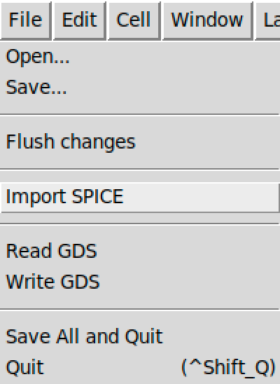
Figure 14.1: Import SPICE function in magic
In the next step of this .gds file, generated from magic, can be edited with the use of KLayout. The purpose of this process was to have all components added and properly sized, according to the design. After this import, the expectation was to rearrange the components and connect them according to the schematic. This method is quite similar to the process we experienced in the bachelor course with KiCad, where all components were added directly from the schematic and the layouting process consisted mainly of placing and routing. Unfortunately, the import SPICE functionality was not available per default for the sg13g2 PDK. With the help of Prof. Dr.-Ing. Mirco Meiners the group was able to activate the spice-import function by editing the .magicrc file and the corresponding paths. The edited files are available in the repository in the 4_layout/.magicrc file. Before the import SPICE button appears, the directory .magic needs to be copied to the design directory
cp -r AMCD_GROUP2_IC_DESIGN/.magic /foss/designs
Important
RELEASE-NOTES: only a beta-version and therefore not fully functional
When starting magic from the 4_layout directory, the import SPICE button appears and a netlist to import can be selected. After generating the .gds file with magic and opening it in KLayout, the different cells appear. The resulting .gds file opened in KLayout can be seen in Figure 14.2. However, the cells are not labeled and therefore are difficult to identify. In order to connect them properly according to the schematic, all components need to be added manually. This may be due to the fact, that it is a beta-version, which is stated in the RELEASE-NOTES.
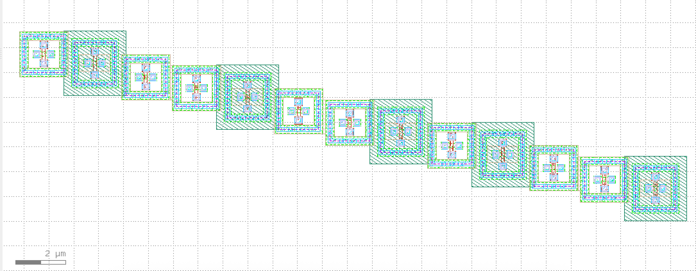
Figure 14.2: Layout of 5T-OTA in KLayout generated from magic
Figuring out how to enable the import SPICE function in magic and how the layout process overall works with the use of KLayout took a considerable amount of time. Since the workaround with importing a SPICE netlist did not work as expected, the layout needed to be generated and edited with KLayout. KLayout will start per default in the non-editing mode, which do not offer the opportunity to create layouts. To enable the editing mode, the complete menu or KLayout needs to be searched for this the editing mode option.
14.2.2 LVS
As mentioned in Chapter 13 the layout versus schematic (LVS) worked not as expected. The problem seems to be related with the naming of the files or the paths, as the error in Figure 14.3 points out.
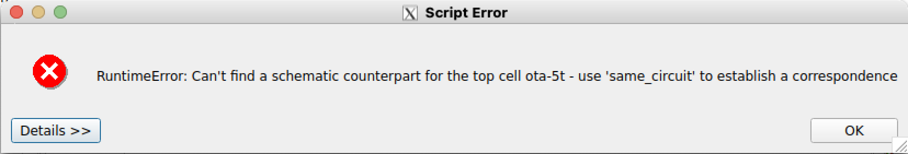
Figure 14.3: Error using LVS in KLayout
The naming of the layout files, the top cells, netlist files and schematic were checked several times. Unfortunately the problem could not be solved, which means the LVS could not be performed.
14.3 Time Constraints
The limited time in the course is another aspect which needs to be mentioned. The ASLK Pro biquad filter is well-known by the group, since in the bachelor course ANS the same structure was used for the discrete circuit design. In comparison to the discrete design, the integrated design was handled in the IIC-Docker from [1], which uses different tools like ngspice and KLayout. To understand the working principle of this integrated development image was not trivial. For instance the different workflow in ngspice, particularly the simulation commands, took considerable amount of time. The different layout process in KLayout and the integrated part took also a significant amount of time, which is a result of the earlier mentioned circumstances. The group spent also a lot of time to match the ideal and the real circuit, respectively. Unfortunately, the result of this investigation was to withdraw the ASLK Pro biquad filter approach and use the Baker implementation.
15 Conclusion
In this course the design process of an integrated circuit was experienced. Since all team members designed the universal biquad filter from [2] previously in their bachelors course as a discrete version, the differences in the workflows of discrete and integrated design became clear. For instance, in the discrete design, the behavior was mainly determined by the choice of the values for \(R\) and \(C\) and the effects of the PCB layout were negligible. However, for the integrated design these insights do not fully apply. In the integrated design process the behavior is determined by different aspects. In [5] the transconductance \(g_m\) defines the filter coefficients and therefore the behavior of the filter. Different \(g_m\) values for different OTAs lead to a different transfer functions. Examples are stated out in Section 12.2. The transconductance is also affected by the sizing of the transistor. The sizing of \(W\) and \(L\) in the integrated design can be understood similarly as the choice of \(R\) and \(C\). These links became clear by the help of this experiment and the challenges described in Chapter 14.
As mentioned in Chapter 14, some issues with the circuit design were present. These challenges led to an enhanced understanding of the 5T-OTA and the design process of an integrated circuit itself. Oppositely, these challenges consumed a significant amount of the given time. Nevertheless, the project helped to comprehend the advanced possibilities of integrated circuit design as well as the different and more complex design process.
Such projects, in this collaborative environment, are considered by the team as very effective to understand the design process of integrated analog circuits. The room for individual design solutions enabled the team to experience more detailed insights to this topic. The error analysis in the step from ideal circuit to the real circuit contributed a lot to the understanding of the topic of circuit design.
Despite the required biquad filter is not working at all and no DRC- and LVS-conform layout is available, the developer team learned much. Due to the use of open source tools instead of commercial tools the learning process was not only limited to the design in one specific toolchain. Indeed, the learning process included much information about the complete toolchain in general and gave a good insight, which processes are covered in commercial tools in the background, but are necessary in an open source environment.
[1]
H. Pretl and G. Zachl, GitHub repository of the IIC-OSIC-TOOLS. (Mar. 18, 2025). Zenodo. doi: 10.5281/ZENODO.14387234.
[2]
K.R.K. Rao and C.P. Ravikumar, Analog system lab kit PRO MANUAL. MikroElektronika Ltd., 2012.
R. J. Baker, CMOS: Mixed-signal circuit design, 2nd Edition. Wiley-IEEE Press, 2008.
[6]
H. Pretl, M. Koefinger, and S. Dorrer, “Analog CircuitDesign.” Dec. 2024. doi: 10.5281/zenodo.14387481.
[7]
J. Lienig and J. Scheible, Grundlagen des Layoutentwurfs elektronischer Schaltungen. Springer International Publishing, 2023. doi: 10.1007/978-3-031-15768-4.